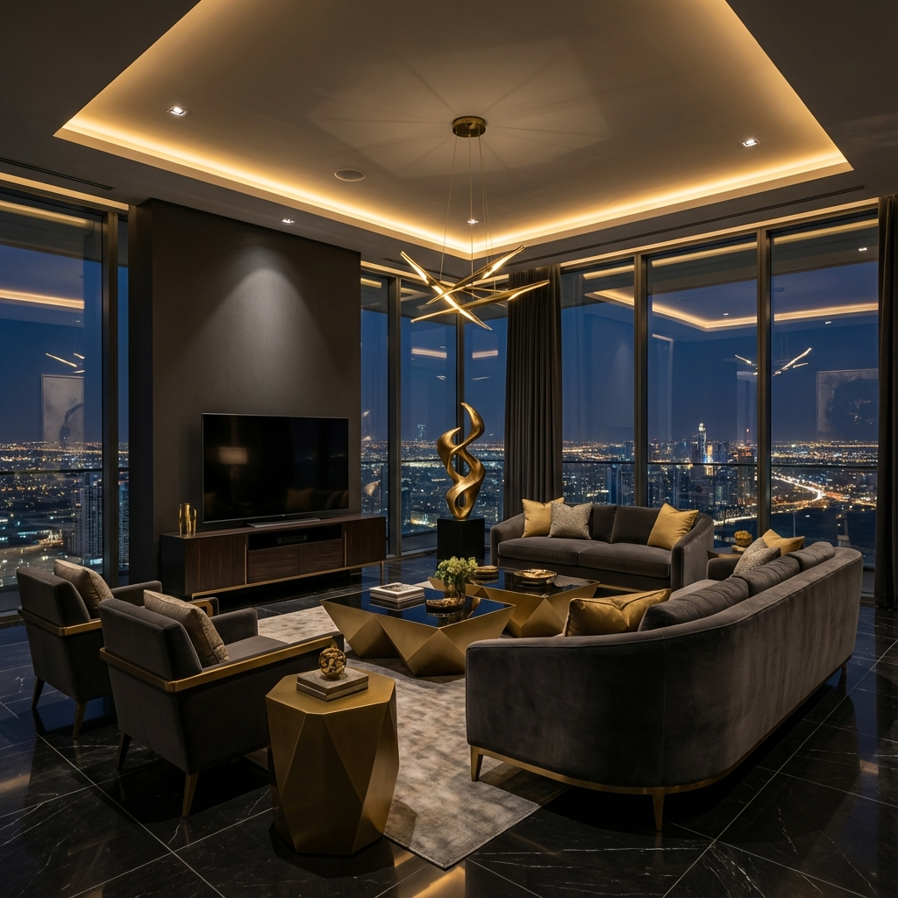
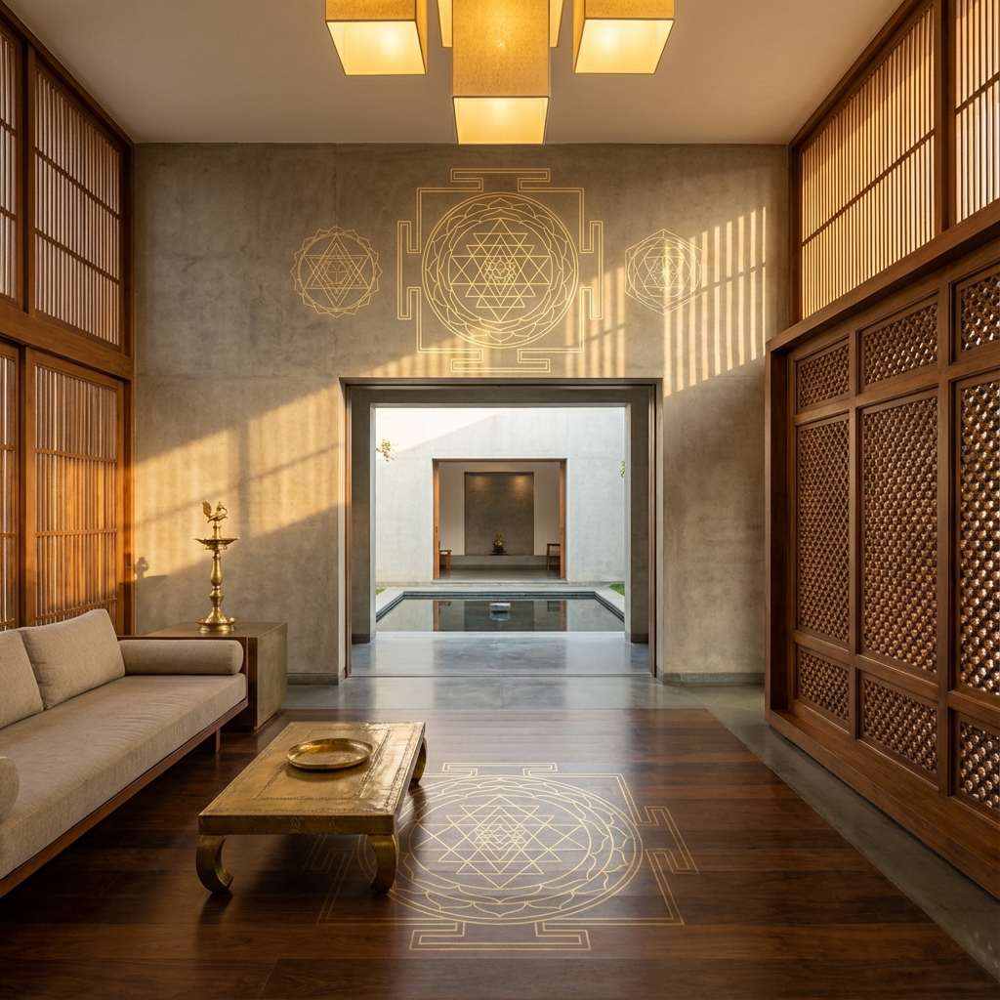

Bienes
Raíces
Skyline Estates
Recorridos inmersivos en 3D y calificación de clientes potenciales impulsada por IA que aumentó las tasas de cierre en un 40%.
Joyería
Lumière
Una experiencia de boutique digital que lleva la elegancia de una sala de exposición a la web.

Marino
Novamare
Sistemas autónomos de gestión de yates con integración segura en la nube.

Tecnología
de Bienestar
Portal Vastu
Una plataforma de aprendizaje armoniosa para Vastu Shastra, que combina la sabiduría antigua con el diseño moderno.